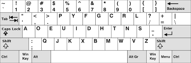
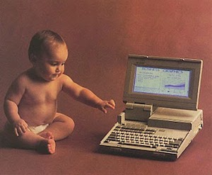
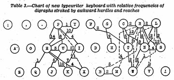

|



What is the CLITT?
Ever had trouble hitting your mark? Are your fingers tired from late nights spent awkwardly hunting and pecking? It's not you. It's QWERTY.
Don't worry. It may have taken years, but you've found the CLITT. The Citizens' League for Intelligent Touch-Typing was formed in 1995 when
James Smile and Bob Denim united Egg Harbor's Neighborhood Internet Protection Service with the nearby Citizens of Ocean City for Keyboard Safety.
Born out of rising concerns over the inefficiency and cyber-weakness of the ubiquitous QWERTY keyboard, the CLITT's central mission is to promote
the adoption of the Dvorak layout in all spheres of public and private life. The League's touch-type races and popular "Dvorak Bingo" events have
influenced tens of keyboard users, including prominent local business owners and two Egg Harbor city comptrollers. Join the mailing list to find
out how YOU can help others find the CLITT too.
Announcements
- 1997/03/22: Great session, everyone. Thank you to Herb and his wife for the wonderful demonstration.
- 1997/02/20: QWERTY-pinata is postponed (date TBD). Barb needs help with the "W"
- 1997/01/20: Dvorak tele-campaign starts next month. Get your phone and fax ready.
- 1996/12/21: URGENT. Please contact gosecurejim72 [at] aol [dot] com if you ate the oyster stuffing at last night's xmas party.
- 1996/11/18: Dvorak December is right around the corner. This is the time people. If you love Dvorak, spread it far and wide! Finding the CLITT could be someone's xmas miracle.
- 1996/11/01: Last nights Halloween party was a huge success. (We had two ghosts and five QWERTY keyboards. Spooky!).
- 1996/10/20: ATTN. Everyone attending the Halloween door-to-door Dvorak campaign MUST meet at the Wegman's parking lot 6pm.
- 1996/09/21: Thank you to Margie Kinnery for the cookies.
- 1996/08/29: Dvorak Day at Egg Harbor Elementary is cancelled. We are making plans to talk to schoolchildren individually.
- 1996/07/19: Dvorak Day is coming up in less than 2 months!
- 1996/06/20: Barbara Toolman to give "Big O" seminar next meeting.
- 1996/05/18: ATTN. The red Daihatsu Charade parked outside Palace of Lights will be impounded within 5 days if it is not moved.
- 1996/04/22: We have heard from Phil Balsner's wife that he is recovering well, and his fingers will be back to normal in a week. Thank you to everyone who helped maintain calm last night. You show the true spirit of CLITT. Further, Bob's colonoscopy was successful. He thanks everyone for the letters.
- 1996/04/15: The first bi-state "Dvorak v. QWERTY" debate is coming up next week, and will be hosted at our usual meeting location. IMPORTANT: The safety of our members is our top priority. Please do not engage in verbal, physical, or cyber altercations with QINC or other members of the QWERTY crowd.
- 1996/04/07: Congratulations to Phil Balsner, who will be representing the CLITT at the upcoming bi-state debate against QINC.
- 1996/03/20: Bob Denim will not be able to represent the CLITT at the bi-state "Dvorak v. QWERY" debate against QINC next month due to an emergency colonoscopy. A vote will be held for his replacement in three days.
- 1996/02/19: CONFIRMED. The first bi-state "Dvorak v. QWERY" debate will be hosted at the headquarters of the CLITT, with full cooperation from the QWERTY Institute of North Carolina (QINC).
- 1996/01/12: "Between the Sheets". Herb Gillman to give tonight's lecture on finding the CLITT and how it accelerated his productivity with Microsoft Excel spreadsheets.
- 1995/12/27: All part-time CLITT staff please come in for an emergency meeting to plan our New Years Eve-nt. (Note that today is NOT considered a holiday by most businesses.)
|
| |
|
|
|
|
Mailing Address
CLITT, MS A347,
Tilton Times Plaza Suite 44, 6814 Tilton Rd,
Egg Harbor,
NJ
08234, U.S.A.
|
|
|
The CLITT's Mission
- Reduce cyber-mistakes (and ergo cyber-crimes) by eliminating
the nefarious QWERTY keyboard layout from
all public and private institutions
- Fight carpal tunnel syndrome and improve general public cyber-health
by promoting the adoption of the Dvorak keyboard layout
- Act as a civilian QWERTY 'watchdog' and liason to the FBI cybercrimes division
|
|
|
Praise for the CLITT
My wife and I run a small business together.
Finding the CLITT literally saved my marriage.
—Herb Lemmon, aquarium parts retailer
My workdays have gotten so much easier after I found the CLITT.
I can get the job done with fewer awkward strokes...
My customers are more satisfied than ever.
—Ken Standard, freelance I.T.
Finding the CLITT has been immensely empowering.
You just don't learn these things growing up!
—Barbara Toolman, university lecturer
Librarian lady says I got magic fingers. Thanks, CLITT.
—Terry Loam, part-time hot dog stand man
J'écraserai tous les ennemis du CLITT.
—Lucien, profession unknown
|
|